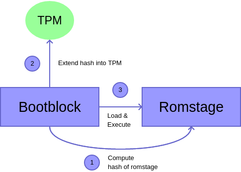

Measured Boot
Measured boot feature was initially implemented as an extension of Google Verified Boot. However, the two features were decoupled since then and use of measured boot no longer requires enabling vboot.
In most cases TPM eventlog is initialized during bootblock before TPM gets set up, hence digests are not measured into TPM immediately, but are only cached in the event log. Later, as part of TPM setup, the cached events are applied onto TPM device. The behaviour is different if TPM_MEASURED_BOOT_INIT_BOOTBLOCK kconfig is set, which moves TPM initialization into bootblock.
SRTM
A measured-based trust chain is one that begins with an initial entity that takes the first measurement, referred to as the “Core Root of Trust for Measurement” (CRTM), before control is granted to the measured entity. This process of measurement and then passing control is referred to as a transitive trust. When the CRTM can only ever be executed once during the power life-cycle of the system, it is referred to as a “Static CRTM” (S-CRTM). Thus the trust chain constructed from the S-CRTM is referred to as the Static Root of Trust for Measurement (SRTM) trust chain. The theory is that as long as a proper transitive trust is conducted as more code is allowed to execute, a trustworthy record showing the provenance of the executing system may be provided to establish the trustworthiness of the system.
IBB/CRTM
The “Initial Boot Block” (IBB) is a one-time executed code block loaded at the reset vector. Under measured boot mode, the IBB measures itself before measuring the next code block making it an S-CRTM for the measured boot trust chain, an SRTM trust chain. Since the IBB measures itself and executes out of DRAM, it is said to have a “Root of Trust” (RoT) that is rooted in software.
S-CRTM Hardening
To address attacks that took advantage of the IBB being self-referential with both the “Root of Trust for Verification” (RTV) and “Root of Trust for Measurement” (RTM) being rooted in software, hardening was implemented by CPU manufactures. This was accomplished by introducing RoT, typically an RTV, to an external entity provided by the manufacture that could be validated by the CPU at boot. Examples of this are Intel’s BootGuard and AMD’s Hardware Validated Boot (also known as Platform Secure Boot). These solutions work by having the IBB invoke the manufacture provided RoT as early as possible, for which the CPU has already validated or validates when invoked. The RoT will then validate the IBB, thus moving the root for the respective trust chain, typically the verification trust chain, into hardware.
It should be noted that when Intel BootGuard was originally designed, it provided a measurement mode that resulted in the ACM (Authenticated Code Module) becoming the S-CRTM for the SRTM trust chain. Unfortunately, this was never deployed and thus relying on “Root of Trust for Verification” (RTV) signature check as the only assertion rooted in hardware.
Known Limitations
At the moment measuring IBB dynamically and FMAP partitions are not possible but will be added later to the implementation.
Also SoCs making use of VBOOT_RETURN_FROM_VERSTAGE are not able to use the measured boot extension because of platform constraints.
Measurements
To construct the coreboot SRTM trust chain, the CBFS files which are part of the IBB, are identified by a metadata tag. This makes it possible to have platform specific IBB measurements without hard-coding them.
CBFS files (stages, blobs)
CBFS data is measured as raw data before decompression happens.
CBFS header is excluded from measurements.
Measurements are stored in PCR 2 (by default, use PCR_SRTM kconfig option to change).
Runtime Data
CBFS data which changes by external input dynamically. Never stays the same.
It is identified by TPM_MEASURED_BOOT_RUNTIME_DATA kconfig option and measured into a different PCR (PCR_RUNTIME_DATA kconfig option, 3 by default) in order to avoid PCR pre-calculation issues.

TPM eventlog
There are three supported formats of event logs:
coreboot-specific format.
TPM1.2 Specification (chapter 11).
TPM2.0 Specification (chapter 10).
coreboot-specific format
struct tcpa_entry {
uint32_t pcr; /* PCR number. */
char digest_type[10]; /* Hash algorithm name. */
uint8_t digest[64]; /* Digest (tail can be unused). */
uint32_t digest_length; /* Number of digest bytes used. */
char name[50]; /* Description of what was hashed. */
} __packed;
struct tcpa_table {
uint16_t max_entries;
uint16_t num_entries;
struct tcpa_entry entries[0];
} __packed;
Single hash per PCR. No magic number or any other way of recognizing it. Endianness isn’t specified.
In principle can hold any hash with 512 bits or less. In practice, SHA-1 (for TPM1) and SHA-256 (TPM2) are used.
Can be parsed by cbmem.
Console dump format
The first column describes the PCR index used for measurement. The second column is the hash of the raw data. The third column contains the hash algorithm used in the operation. The last column provides information about what is measured. First the namespace from where the data came from, CBFS or FMAP, then the name used to look up the data (region or file name).
TPM 1.2 format
Single hash per PCR (always SHA-1). First entry serves as a header, provides ID and version. Always little endian. Event data describes what is being hashed as a NUL-terminated string instead of providing the actual raw data.
Can be parsed by at least cbmem and Linux (exports in both text and binary
forms).
Packed data in vendor info section of the header:
uint8_t reserved; /* 0 */
uint8_t version_major; /* 1 */
uint8_t version_minor; /* 0 */
uint32_t magic; /* 0x31544243 ("CBT1" in LE) */
uint16_t max_entries;
uint16_t num_entries;
uint32_t entry_size;
All fields are little endian.
TPM 2.0 format
One or more hashes per PCR, but implementation is limited to single hash (SHA-1, SHA-256, SHA-384 or SHA-512). First entry is overall compatible with TPM 1.2 and serves as a header with ID, version and number of hashing algorithms used. Always little endian. Event data describes what is being hashed as a NUL-terminated string instead of providing the actual raw data.
By default SHA-1 is used for TPM1 and SHA-256 for TPM2. Other options are selectable via kconfig menu.
Can be parsed by at least cbmem, Linux (exports only binary form) and
Skiboot.
Packed data in vendor info section of the header:
uint8_t reserved; /* 0 */
uint8_t version_major; /* 1 */
uint8_t version_minor; /* 0 */
uint32_t magic; /* 0x32544243 ("CBT2" in LE) */
uint16_t max_entries;
uint16_t num_entries;
uint32_t entry_size;
All fields are little endian.
Example:
PCR-2 e8f2b57c9ec5ea06d1bbd3240a753974d4c3e7c8cd305c20a8ea26eed906dc89 SHA256 [FMAP: COREBOOT CBFS: bootblock]
PCR-2 309a5fcb231d3a39127de2521792f332f9a69e05675ec52535d2dcded756dc19 SHA256 [FMAP: COREBOOT CBFS: fallback/verstage]
PCR-2 0fbba07a833d4dcfc7024eaf313661a0ba8f80a05c6d29b8801c612e10e60dee SHA256 [FMAP: RO_VPD]
PCR-2 431681113ed44cbf6f68a12c6e5687e901052f1d728a4777b2ad36e559962047 SHA256 [FMAP: GBB]
PCR-2 f47a8ec3e9aff2318d896942282ad4fe37d6391c82914f54a5da8a37de1300c6 SHA256 [FMAP: SI_DESC]
PCR-3 237f6f567f8597dbdff0a00690d34d21616af0dbe434b9a2d432b136c012765f SHA256 [FMAP: SI_ME]
PCR-2 7d2c7ac4888bfd75cd5f56e8d61f69595121183afc81556c876732fd3782c62f SHA256 [FMAP: SI_GBE]
PCR-0 62571891215b4efc1ceab744ce59dd0b66ea6f73 SHA1 [GBB flags]
PCR-1 a66c8c2cda246d332d0c2025b6266e1e23c89410051002f46bfad1c9265f43d0 SHA256 [GBB HWID]
PCR-2 ceca357524caf8fc73f5fa130f05a75293031962af884e18990d281eb259f5ff SHA256 [FMAP: FW_MAIN_B CBFS: fallback/romstage]
PCR-2 548a097604e0a975de76f98b04c7f0b0ddec03883dd69179e47a784704a1c571 SHA256 [FMAP: FW_MAIN_B CBFS: fspm.bin]
PCR-2 1e86b27008818244c221df2436b0113bd20a86ec6ec9d8259defe87f45d2f604 SHA256 [FMAP: FW_MAIN_B CBFS: spd2.bin]
PCR-2 05d78005fcfc9edd4ca5625f11b1f49991d17bdb7cee33b72e722bc785db55ae SHA256 [FMAP: FW_MAIN_B CBFS: fallback/postcar]
PCR-2 c13e95829af12a584046f1a6f3e1f6e4af691209324cfeeec573633399384141 SHA256 [FMAP: FW_MAIN_B CBFS: fallback/ramstage]
PCR-2 a6ec2761b597abd252dba2a7237140ef4a5a8e0d47cad8afb65fa16314413401 SHA256 [FMAP: FW_MAIN_B CBFS: cpu_microcode_blob.bin]
PCR-2 c81ffa40df0b6cd6cfde4f476d452a1f6f2217bc96a3b98a4fa4a037ee7039cf SHA256 [FMAP: FW_MAIN_B CBFS: fsps.bin]
PCR-2 4e95f57bbf3c6627eb1c72be9c48df3aaa8e6da4f5f63d85e554cf6803505609 SHA256 [FMAP: FW_MAIN_B CBFS: vbt.bin]
PCR-3 b7663f611ecf8637a59d72f623ae92a456c30377d4175e96021c85362f0323c8 SHA256 [FMAP: RW_NVRAM]
PCR-2 178561f046e2adbc621b12b47d65be82756128e2a1fe5116b53ef3637da700e8 SHA256 [FMAP: FW_MAIN_B CBFS: fallback/dsdt.aml]
PCR-2 091706f5fce3eb123dd9b96c15a9dcc459a694f5e5a86e7bf6064b819a8575c7 SHA256 [FMAP: FW_MAIN_B CBFS: fallback/payload]
Dump TPM eventlog in the OS:
cbmem -L
Get CBFS file and print the hash
cbfstool coreboot.rom extract -r COREBOOT -n fallback/romstage -U -f /dev/stdout | sha256sum
Get FMAP partition and print the hash
cbfstool coreboot.rom read -n SI_ME -f /dev/stdout | sha256sum
DRTM
Certain hardware platforms, for example those with Intel TXT or AMD-V, provide a mechanism to dynamically execute a CRTM, referred to as the “Dynamic CRTM” (D-CRTM), at any point and repeatedly during a single power life-cycle of a system. The trust chain constructed by this D-CRTM is referred to as the “Dynamic Root of Trust for Measurement” (DRTM) trust chain. On platforms with Intel TXT and AMD-V, the D-CRTM is the CPU itself, which is the reason for these capabilities being referred to as having a “Root of Trust” (RoT) rooted in hardware.
To provide as an authority assertion and for the DRTM trust chain attestations
to co-exist with the SRTM trust chain, the TPM provides localities, localities
1 - 4, which restrict access to a subset of the Platform Configuration
Registers (PCR), specifically the DRTM PCRs 17 - 22. The mechanism to assert
authority for access to these localities is platform specific, though the
intention was for it to be a hardware mechanism. On Intel x86 platforms this is
controlled through communication between the CPU and the PCH to determine if
the “Dynamic Launch” instruction, GETSEC[SENTER], was executed and that the
CPU is in SMX mode. For AMD x86 platforms, this controlled with the APU with a
similar enforcement that the “Dynamic Launch” instruction, SKINIT, was
executed.
Platform Configuration Registers
PCRs are allocated as follows:
PCRs 0-15 are SRTM PCRs.
PCRs 0-7 are reserved for firmware usage.
PCR 16 is the debug PCR.
PCRs 17-22 are DRTM PCRs (PCR 22 is resettable from locality 1).
PCR 23 is the application/user PCR and is resettable from locality 0.
coreboot uses 3 or 4 PCRs in order to store the measurements. PCRs 4-7 are left empty.
The firmware computes the hash and passes it to TPM.
The bank used by the TPM depends on the selected eventlog format. CBFS hashes use the same algorithm as the bank. However, GBB flags are always hashed by SHA-1 and GBB HWID by SHA-256. This results in these hashes being truncated or extended with zeroes in eventlog and on passing them to TPM.
If CHROMEOS kconfig option is set
vboot-specific (non-standard) PCR usage.
PCR-0 - SHA1 of Google vboot GBB flags.
PCR-1 - SHA256 of Google vboot GBB HWID.
PCR-2 - Hash of Root of Trust for Measurement which includes all stages, data and blobs.
PCR-3 - Hash of runtime data like hwinfo.hex or MRC cache.
If CHROMEOS kconfig option is NOT set
See TPM1.2 Specification (section 3.3.3) and TPM2.0 Specification (section 3.3.4) for PCR assignment information.
PCR-0 - Unused.
PCR-1 - SHA1 of Google vboot GBB flags, SHA256 of Google vboot GBB HWID.
PCR-2 - Hash of Root of Trust for Measurement which includes all stages, data and blobs.
PCR-3 - Hash of runtime data like hwinfo.hex or MRC cache.